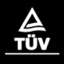

CapabilityGuide
核心能力總覽

研發設計能力強
IIoT & Saving Solutions
馬達是機電產品最具核心之一環，擁有自主研發設計中心，具備承製從1/4HP到 100,000HP，從220V到14,500V 完整馬力與電壓範圍的馬達之實力，且通過多國試驗室認證；此外，全製程馬達製造工廠（從鑄件→關鍵組件→成品），具備開發及自製精密模具與設備能力，透過自動化與客製化，積極推展高效率綠色產品，IE3與IE4超高效率馬達，並搭配全系列510變頻器，節省大量電力，減少能源消耗，提供客戶最佳選擇。

客製化解決方案
IIoT & Saving Solutions
東元擁有完整的產品線 (例如:馬達、變頻器、開關產品、減速機等)，並可因應特殊規格需求，提供客戶客製化解決方案，產品的廣度與精度同時到位，藉此以利提供更完整的工程解決方案服務，提高整體市佔率。

高品質管理
Engineering solutions fine
本公司積極追求成為一個全球化、高科技的企業集團。堅持永續發展，創造競爭優勢，提升服務品質，培養一流人才，創造一產品，是東元永遠的承諾：
-
持續改善，以提升各項產品之行銷、營業、研發與設計、採購、生產及服務過程品質。
-
確保所有產品之設計、生產及服務過程，均符合適用法令、法規及標準要求，以滿足顧客需求。
-
確保本公司品質管理系統符合國際品質管理系統要求，以持續改善企業體質。
-
藉由各項改善活動，提昇產品競爭力，以創造競爭優勢。
-
各生產基地推動國際品質管理系統，使產品與服務有一致性的水準，以建立國際水準之品牌形象
品質認證 Quality
-
ISO 14001 : Environment Management System (EMS) Certification
The purpose of environment management system certification is to assist Taiwan's organizations in implementing environmental management systems, enhancing public image, and improving environmental performance so as to meet the goals of pollution prevention and sustainable development. The certification standard is ISO 14001 (CNS 14001) and 189 organizations have been certified as of November 30, 2004.
-

ISO/TS 16949
The purpose of environment management system certification is to assist Taiwan's organizations in implementing environmental management systems, enhancing public image, and improving environmental performance so as to meet the goals of pollution prevention and sustainable development. The certification standard is ISO 14001 (CNS 14001) and 189 organizations have been certified as of November 30, 2004.
-
BSMI Mark
The purpose of environment management system certification is to assist Taiwan's organizations in implementing environmental management systems, enhancing public image, and improving environmental performance so as to meet the goals of pollution prevention and sustainable development. The certification standard is ISO 14001 (CNS 14001) and 189 organizations have been certified as of November 30, 2004.
-
TUV : Management System (QMS) Certification
The purpose of environment management system certification is to assist Taiwan's organizations in implementing environmental management systems, enhancing public image, and improving environmental performance so as to meet the goals of pollution prevention and sustainable development. The certification standard is ISO 14001 (CNS 14001) and 189 organizations have been certified as of November 30, 2004.
-
C-UL US Listing Mark
The purpose of environment management system certification is to assist Taiwan's organizations in implementing environmental management systems, enhancing public image, and improving environmental performance so as to meet the goals of pollution prevention and sustainable development. The certification standard is ISO 14001 (CNS 14001) and 189 organizations have been certified as of November 30, 2004.
-
OHSAS 18001
The purpose of environment management system certification is to assist Taiwan's organizations in implementing environmental management systems, enhancing public image, and improving environmental performance so as to meet the goals of pollution prevention and sustainable development. The certification standard is ISO 14001 (CNS 14001) and 189 organizations have been certified as of November 30, 2004.

智能設備服務
Excellent value after service
藉由與集團內關係企業，提供智能產品，協助客戶隨時掌握設備內關鍵產品運轉狀態，避免設備有重大損害，提供預防維養之規劃，加強產品品質信賴度；透過產品維修保養、效能評估與完善的維修服務可以提升產品的附加價值。藉由數位化的售後服務，保養及時，設備產能提升，大幅降低客戶成本。

全球銷售服務網
IIoT & Saving Solutions
事業版圖橫跨全球五大洲四十餘國、百餘城市